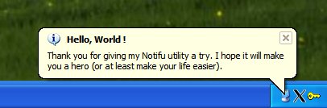

Notifu is a tool that displays a yellow pop-up balloon in the system notification area, better known as the tray. It is free and open source, give it a try!
Notifu uses the same API that Windows uses to show pop-up ballons. You see them when you add a device, such as a wireless network or a USB drive, or when certain system events occur, say, every second tuesday of the month...
I created this utility to put in my scripts, as it allows to show status messages using a less intrusive (non-blocking) way. It also allows for some user interaction if the user clics on the balloon.
Notifu can do most of the tricks Windows allows, like :
If you need a feature that Notifu doesn't provide, . What's missing is easy to add. I just stopped when I had everything I needed.
Notifu displays a message. So in it's simplest form, the message is the only required arguments. Use the /m switch
notifu /m "This is a simple Notifu message."
You will notice that by default, Notifu uses the icon of its parent process. We will get to that later.
You can combine any other command line switch along with /m. But for clarity, they are prensented separatly here. Go to "example usage" section below to see Notifu in action.
Most users will want their own prompt (or title also). Use the /p switch
notifu /m "This is a simple Notifu message." /p "Simple prompt"
You probably don't want it to stay up there forever. Use the /d switch (the delay is in milliseconds, with a 250ms resolution).
notifu /m "This is a simple Notifu message." /d 3000
If your message is important, you can change the icon Windows will use inside the balloon with the /t switch, followed by info, warn or error.
notifu /m "This is a simple Notifu message." /t warn
If you script launches from a cmd.exe process or some batch program, you might want to use a different icon in the system notification area. The /i switch tries it's best to extract an icon from the path you give it. It supports using variables and an icon number.
notifu /m "This is a simple Notifu message." /i %SYSTEMROOT%\system32\shell32.dll,43
Notifu handles many instances of itself. When an instance sees a new instance comming up, it dismisses itself to make way for the new one. This behavior allows you to put notifu messages in your scripts and not have to worry about confusing the user. It uses terminal services aware semaphores to achieve this.
@echo off
rem This batch file show how to use notifu in a long running script. I doubt it is usefull for anything else.
start "" notifu /p "Please wait..." /m "Checking disk integrity. It might take a while. Take this time off to call your mother." /t warn /i %SYSTEMROOT%\system32\shell32.dll,79
chkdsk c: /I /C
start "" notifu /p "Finished!" /m "Done checking the drive for errors."
You also might want to interact with the user using these pop-ups. Notifu returns a different errorlevel depending on what happened.
| ERRORLEVEL | Event |
| 0 | Registry was succesfully edited. Only returned when /e is used with no other argument. |
| 1 | There was an error in one the argument or some required argument was missing. |
| 2 | The balloon timed out waiting. The user didn't click the close button or the balloon itself. |
| 3 | The user clicked the balloon. |
| 4 | The user closed the balloon using the X in the top right corner. |
| 255 | There was some unexpected error. |
Those result codes can be usefull to give the user more information on a specific action that is going on, by sending them to an intranet web page, for example.
@echo off rem (Do something usefull here) notifu /m "Click the balloon to know more about what is going on." /d 5000 if NOT ERRORLEVEL 3 goto END start iexplore "http://code.google.com/p/notifu/" :END
There are a few special switches that could be helpful. There is a registry setting that controls whether or not pop-up balloons will show in the system notification area. The /e switch will change (or add) the registry to enable pop-up balloons. The registry setting is at HKCU\Software\Microsoft\Windows\CurrentVersion\Explorer\Advanced. It's a DWORD value named EnableBalloonTips. You can specify the /e along with other switches, but it looks like the registry is somehow cached for every program run, so if the /e changed anything, it will only be taken into consideration the next time you run Notifu.
notifu /e
There are also the classic /? that will show an help and the /v that will show the version you are using.
Usage: notifu [@argfile] [/?|h|help] [/v|version] [/t] [/d ] [/p ] /m [/i ] [/e] @argfile Read arguments from a file. /? Show usage. /v Show version. /t The type of message to display values are: info The message is an informational message warn The message is an warning message error The message is an error message /d The number of milliseconds to display (omit or 0 for infinit) /p The title (or prompt) of the ballon /m The message text /i Specify an icon to use ("parent" uses the icon of the parent process) /e Enable ballon tips in the registry (for this user only)
The source code for this project is hosted at Google code. It is written in C++ and built with Visual C++ 2005. There is also a Visual C++ version 6.0 workspace included.
You can read about the implementation, or find out for yourself by any of those means:
svn checkout http://notifu.googlecode.com/svn/trunk/ notifu